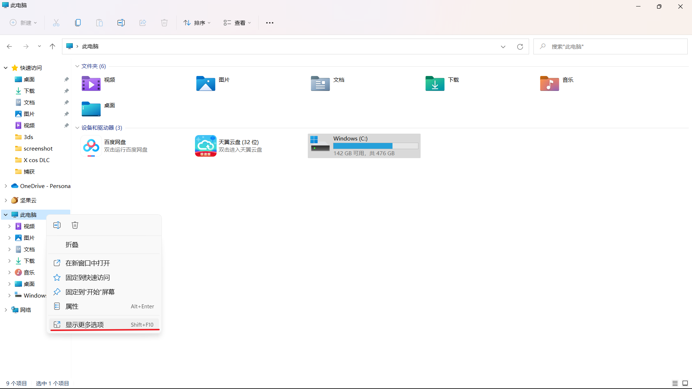

[TRICK] General Tricks about Windows
最后更新：2022.03.03, 09:26
System Shortcut
<win-D>: show desktop<win-E>: open source management<win-I>: open system preference<win-L>: lock screen<win-W>/<win-S-W>: minimal all the windows / show all the minimal windows<win-R>: open run
more shortcut can see [4]
System Knowledge
Partition
可在
此电脑->管理中管理分区. 对于未分配区域, 可新增卷或从相邻卷拓展卷(删除卷并拓展可实现卷的合并 [11])
GPT 分区可到 2TB 以上, MBR 则不行, 但 MBR 的兼容性更好。 [10]
- Windows 中只能合并相邻分区 [13]
初始化电脑
开始 -> 设置 -> 更新和安全 -> 恢复 [9]
FQA
Cancel Auto-launch of OneNote
任务管理器 -> 启动 -> turn off Send To OneNote Tool [1]
Quick Launch Tool
Wox is a tool which looks like Alfred or Spotlight on macOS [2] .
显示 “无法连接到Internet” 但能上网
无须特别处理, 很多时候自己就会好。不过也有通过修改注册表来禁止微软服务器的做法 [5] .
使用 <S> 切换日语与英文输入
在相应输入法的 “高级选项” 中设置 Use shift key to switch to half-width Alphanumeric input mode [6]
Win 11 拖动窗口卡顿
“主要是因为资源管理器与透明效果不兼容” [7]
Win 11 切回旧版输入法
设置 -> 选项 -> 微软拼音 -> 常规 -> 使用以前版本的微软拼音输入法

删除 alibabaprotect
该流氓程序来自优酷等阿里系软件。首先要在 任务管理器 中关闭相应进程, 之后将 alibabaprotect 从 C 盘 C:\Program Files (x86) 移动到桌面再删除 (不然删不掉!) [14]
Reference
本博客所有文章除特别声明外，均采用 CC BY-NC-SA 4.0 协议 ，转载请注明出处！